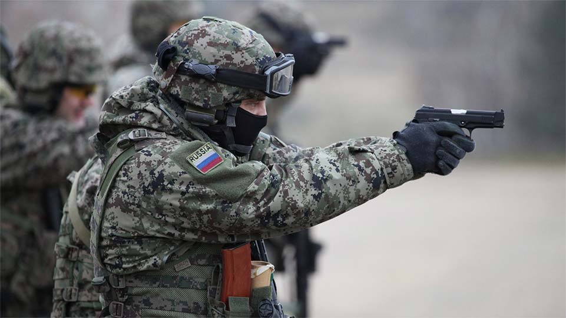

Проект “Один день в спецназе” создан для сильных духом людей, которые хотят перенять ценный опыт офицеров спецназа, получить необходимые навыки, отработать тактики действий в чрезвычайных ситуациях, которые могут случиться как в профессиональной деятельности, так и в жизни. Погружение в будни спецназа будет полным. Проект не раз испытает своих участников на прочность. Но каждый час и каждый день выматывающей тренировки не будут напрасными. Попав в самую гущу событий, придется работать на пределе своих возможностей, превозмогать усталость и помогать другим бойцам, чтобы достичь общей цели.
В рамках проекта участникам предлагаются различные дисциплины:
- Марш-бросок;
- Специальная полоса;
- Высотная и тактико-специальная подготовка;
- Ночные занятия;
- Изучение приемов рукопашного боя;
- Стрельбы и многое другое.
Вас ждут сложные испытания, которые придется проходить в условиях повышенного риска под руководством действующих инструкторов спецназа. В процессе прохождения курсов используются методы, применяемые в войсках специального назначения России. Вам придется столкнуться с полосой препятствий, которую проходят при сдаче на краповый берет; решать боевые задачи в экстремальных условиях; стрелять и бороться врукопашную с вооруженным противником.
